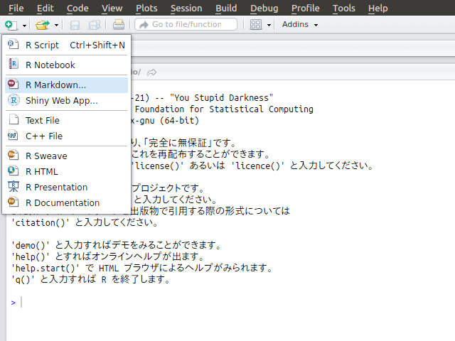
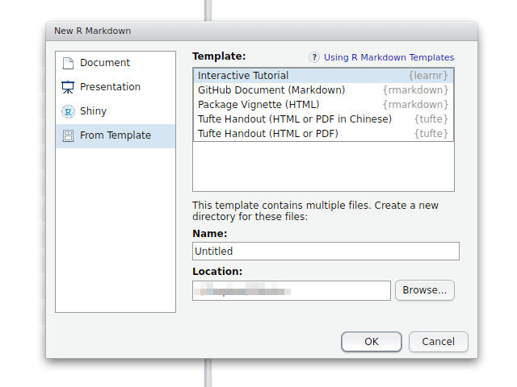
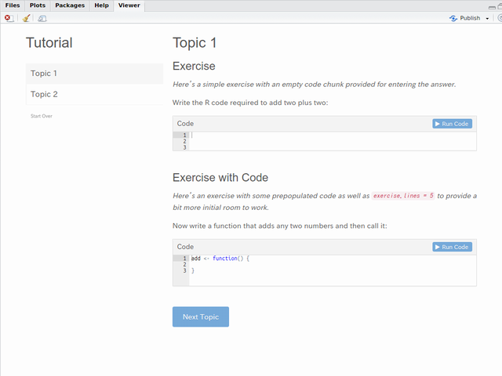

環境作成と動作確認
本ページはデータ分析勉強会で行うチュートリアルファイルを動かすために必要なパッケージのインストールとインストール後の動作確認方法について記述しています。
パッケージのインストール
チュートリアルではRStudioと以下のパッケージが必要となりますので事前にRStudioのインストールならびに以下を参考にDT, formatR, knitr, learnr, rmarkdown, shiny, tidyverseパッケージをインストールして下さい。なお、バージョン情報等についてはこちらで確認して下さい。
R GUIからのインストール
R（R GUI）のメニューからインストールする場合はパッケージのインストールを参照して個々のパッケージを順に指定してインストールして下さい。
RStudioからのインストール
RStudioからインストールする場合は［Packages］パネルにある［Install］ボタンをクリックして表示されるダイアログの［Packages］欄に以下のように入力して［Install］ボタンをクリックします。

R Consoleからのインストール
R GUI, R Commander, RStudioのコンソールからスクリプトを用いて直接インストールする場合は以下のコマンドを実行して下さい。
chooseCRANmirror()
pkg_lst <- c("DT", "formatR", "knitr", "learnr", "rmarkdown", "shiny", "tidyverse")
install.packages(pkg_lst, dependencies = TRUE)
RStudioの動作確認
チュートリアルに必要なパッケージをインストールしましたら以下の手順でRStudioを用いて動作確認を行います。
新規ファイルの作成
RStudioの左上のアイコンから［R Markdown…］をクリックするか麺ヒューから［File］-［New File］-［R Markdown…］を選択します。

テンプレートの選択
テンプレート選択画面が開きますので左側のリストから［From Template］を選択し右側に表示されたテンプレート一覧から［Interactive Tutorial］を選択し［OK］ボタンをクリックします。

ドキュメントのレンダリング
テンプレートが開きましたら［Run Document］ボタンをクリックして下さい。R Markdownファイルのレンダリングが実行されます。
ドキュメントの実行
レンダリングが終了し［Viewer］パネルに下図のような表示が出れば動作確認終了です。

困った場合は
［Console］パネルまたは［R Markdown］パネルにエラーメッセージが表示されていますので、それらを参考に不足しているパッケージをインストールして下さい。特にWindows環境ではUACが原因でパッケージのインストールができない場合もありますので、管理者権限でアプリケーションを立ち上げから実行してください。
 CC BY-NC-SA 4.0, Sampo Suzuki [2017-11-24 23:26(JST)]
CC BY-NC-SA 4.0, Sampo Suzuki [2017-11-24 23:26(JST)]